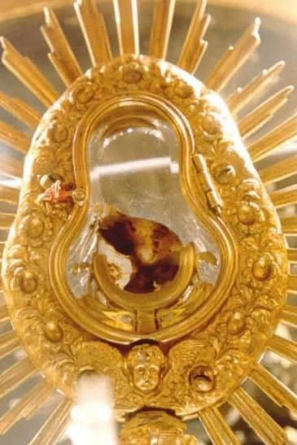
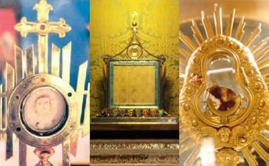
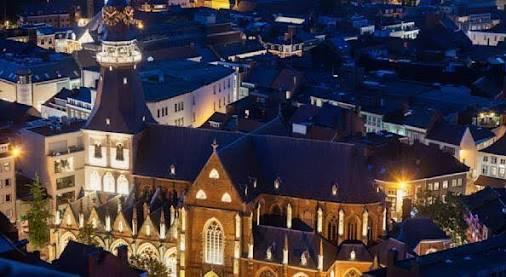

The Eucharistic Miracle of Herkenrode-Hasselt occurred on July 25, 1317, when a consecrated Host began to bleed after being touched by a layman. The sacred relic has been preserved for over 700 years and is currently kept in the St. Quentin Cathedral in Hasselt, Belgium.
Protection from Fire: Over the centuries, the Abbey of Herkenrode faced multiple fires. The nuns successfully invoked protection by praying before the miraculous reliquary, leaving the complex unharmed.
The French Revolution (1796): When the nuns were forced out of their convent by French revolutionary forces, they hid the Host inside a small tin box walled up in a private kitchen to prevent desecration.
Solemn Procession (1804): The Host was retrieved from its hiding spot and brought via a grand procession to the Cathedral of St. Quentin in Hasselt. It remains there today, exposed for public veneration in a special reliquary. The cathedral walls are adorned with 16th and 17th-century paintings by artists like Jan van Boeckhorst that depict scenes of the miracle.